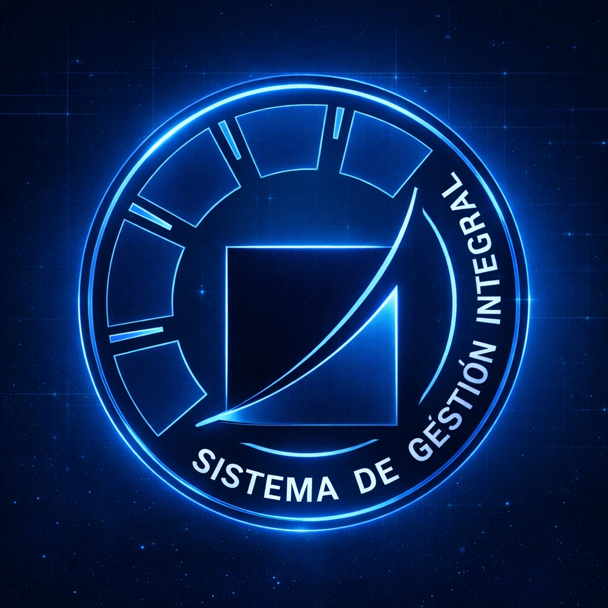

Sistema de Gestión Integral QHSE+
VMS Energy opera bajo un Sistema de Gestión Integral QHSE+ que articula cinco normas ISO en un único marco operativo. Cada proyecto EPC —subestaciones, automatización, energía solar, HVAC industrial u Oil & Gas— se ejecuta con los mismos estándares certificados de calidad, seguridad, ética, ambiente y eficiencia energética.
Diferenciador clave en México: pocas integradoras EPC del sector eléctrico industrial cuentan con las cinco certificaciones simultáneamente. Esto se traduce en:
- Cumplimiento documentado para auditorías corporativas y due diligence.
- Reducción de riesgos operativos, ambientales y de cumplimiento.
- Consumo energético medido, documentado y auditable en cada proyecto EPC.
- Políticas antisoborno alineadas con corporativos globales y requisitos de licitación pública.
